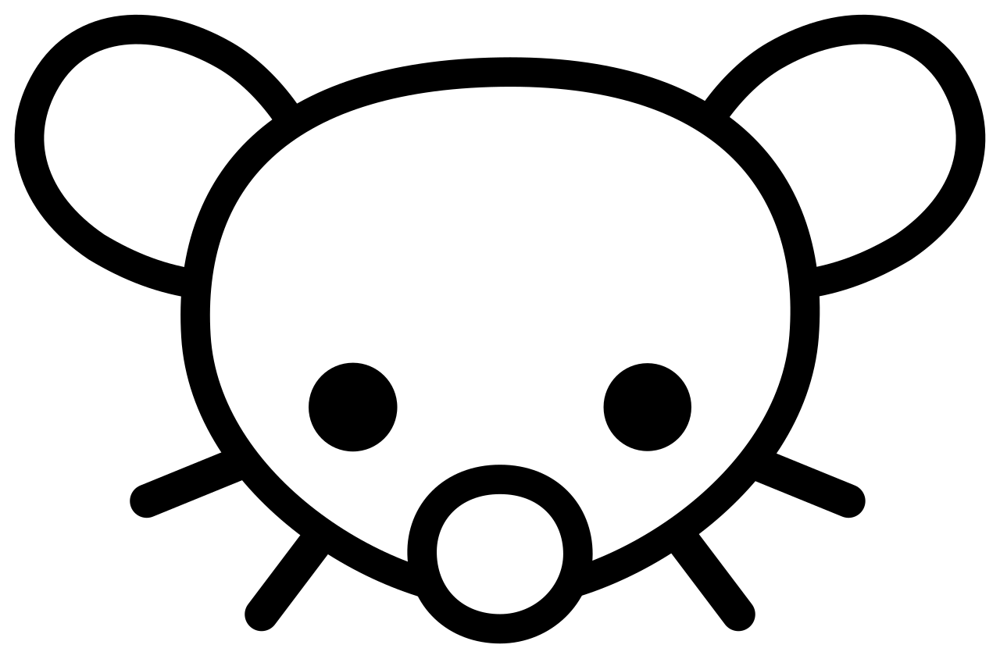

We are happy to share that nutriverse is now fiscally-hosted by the Open Source Collective (OSC), a non-profit fiscal host that provides essential financial and legal infrastructure for thousands of open source projects.
What this means is that as nutriverse’s fiscal host, OSC will be supporting nutriverse in holding the project’s funds, handling taxes, signing legal contracts, and managing accounting. This structure allows us to focus on code and community rather than bureaucracy.
Projects that OSC hosts
The OSC acts as a financial and legal “umbrella” for over 2,7041 open source projects. These projects are highly diverse, ranging from massive pillars of the internet to niche community tools. These projects can be generally categorised into the following groups:
Core web infrastructure and frameworks
These are the “heavy lifters” of modern web development—tools that millions of developers use daily to build the websites and apps we all use.


- Build Tools & Compilers: Projects like Webpack which bundles code for websites and Babel which allows code to run on older browsers are prominent examples. These are critical dependencies for a vast portion of the commercial internet.

- Development Platforms: Frameworks like JHipster help developers generate and deploy modern web applications quickly.
Essential utilities and libraries
These projects often run quietly in the background on servers, personal computers, and even internet-of-things (IoT) devices. They are the invisible glue of the digital world.

Data Transfer: A prime example is cURL, a command-line tool used in virtually every connected device (cars, routers, phones) to transfer data.
System Tools: This category includes universal libraries and command-line interfaces that power other software.
Creative and media software
These are user-facing applications used by creators to produce content, often rivaling paid proprietary software.

Streaming and Recording: OBS Studio by Open Broadcaster Software is the industry standard for live streaming and screen recording, used by millions of streamers on Twitch and YouTube.
Design: Projects like Open Source Design focus on improving the user experience (UX) and visual design of open source software.
Documentation and standards
Not all hosted projects are strictly code. The OSC also hosts initiatives that maintain the knowledge base of the internet.

- Education: Open Web Docs is a collective dedicated to documenting web standards such as creating content for resources like MDN Web Docs to ensure documentation remains vendor-neutral and high-quality.
nutriverse in the OSC ecosystem
As nutriverse becomes part of the OSC family, we note a common thread with all the other open source projects in that we are outgrowing our “small hobbyist” phase and we aim to grow further. Such growth requires institutional sustainability and by joining OSC, we gain the ability to:
- Accept transparent donations and corporate sponsorships;
- Pay maintainers and contributors for their time; and,
- Cover costs for server infrastructure, compute costs, and communications technology.
Transparent code, transparent finances
nutriverse prides itself with being open source and transparent with our code and its development. With OSC as our fiscal host, we extend this transparency to our finances moving forward. The public can view exactly how much money nutriverse raises and exactly how every dollar is spent.
Footnotes
as of February 2026↩︎
Social and decentralised web
The OSC hosts a significant number of projects involved in the “Fediverse” and the decentralized web, supporting alternatives to mainstream, corporate-owned social media.

Social Networking: Mastodon, the decentralized microblogging platform, uses the Collective to manage its funding and operations.
Community Forums: Tools like Lemmy, a link aggregator and Reddit alternative, are also part of this ecosystem.